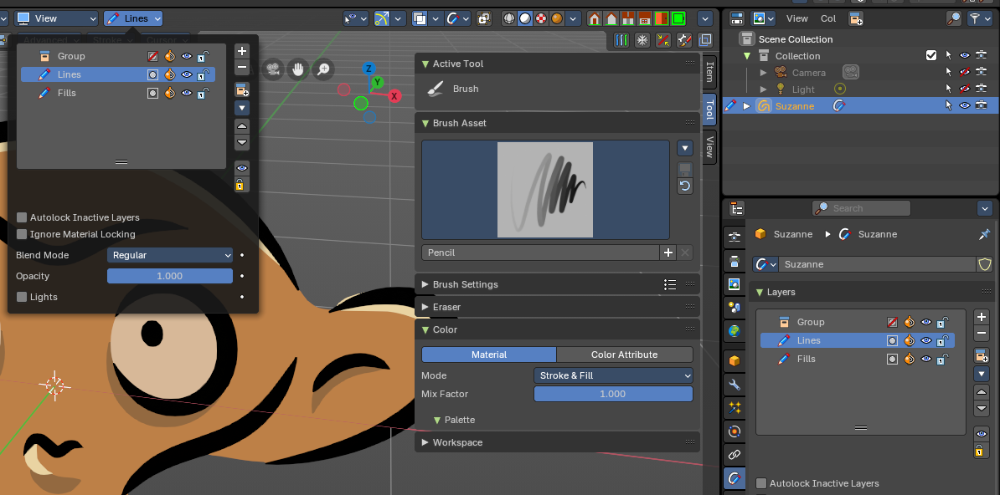
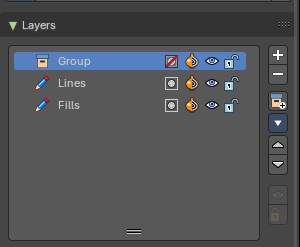
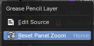
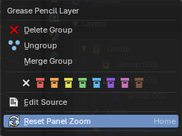
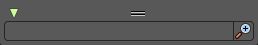
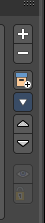
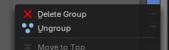
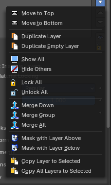
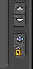
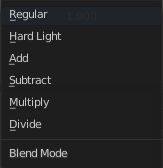

Layer Panel
The content of the Tool tab in the sidebar and the tool settings above the 3D view is usually equal. The Layer panel is a special panel in this regards. It just exists in the tool settings above the 3Dview. And it exists in all grease pencil modes but the object mode.
Grease Pencil objects each have a list of 2D layers for grouping and arranging strokes in a List view. Any stroke can only belong to a single 2D layer. There is always only one active layer in the list (the selected one). When you draw, the new strokes are added to the active layer. By default the view order of the layers in the viewport is top to bottom.
Every layer correspond to a channel in the Dope Sheet editor (in Grease Pencil mode). Layers can also be used together with Modifiers to only affects part of your drawing.
The content is the same than in the Properties editor in the Object Data Properties for a grease pencil object.


Layer list
Layer name
The name of the layer.
Grease pencil layers right click menu

A right click at a group in the list reveals a menu with further options.
When you click at a group layer, then you will reveal further options.
| Entry | What it does |
|---|---|
| Edit Source | Allows you to edit the source code. |
| Reset Panel Zoom | Resets the zoom of the panel to the default value. Note that this entry is dysfunctional. You cannot zoom the panel. |
Delete Group

Deletes the selected group. It does not keep the children, and deletes the whole hierarchy.
| Entry | What it does |
|---|---|
| Ungroup | Ungroups the selected group. |
| Merge Group | Combine the layers in this group into a single layer. |
| Colors | Allows you to color your layer groups in the list. It does not show |
| Entry | What it does |
|---|---|
| Mask Layer | Toggle the Masks visibility in the layer. |
| Onion Skinning | Toggle the use the layer for Onion Skinning. |
| Viewport/Render Visibility | Toggle layer visibility in the viewport and in render. |
| Lock | Toggle layer from being editable. |
Search Field

You can expand a search field at the bottom of the list. Type in your term and hit enter to filter for your term.
Add new layer

Adds a new layer.
| Entry | What it does |
|---|---|
| Remove Layer / Layer Group | Deletes the selected layer or layer group. **Note:**If it removed a Layer group, it keeps the children, and the hierarchy. |
| Add New Layer Group | Adds a group. You can then drag n drop layers into it. The group will be added as a child when you have a group selected. |
Add Extra menu
Delete Group

Deletes the selected group. This only shows when you have a group selected.
Ungroup

Ungroups the selected group. This only shows when you have a group selected.
| Entry | What it does |
|---|---|
| Move To Top | Moves the active selected grease pencil layer to top |
| Move To Bottom | Moves the active selected grease pencil layer to bottom |
| Duplicate Layer | Makes an exact copy of the selected layer appending a number to differentiate its name. This method does not duplicate empty keyframes. |
| Duplicate Empty layer | Makes an exact copy of the selected layer appending a number to differentiate its name. This method does duplicate empty keyframes. |
| Show All | Turns on the visibility of every layer in the list. |
| Hide Others | Turns off the visibility of every layer in the list except the active one. |
| Lock All | Locks edition of all the layers in the list |
| Unlock All | Unlocks edition of all the layers in the list. |
| Merge Down | Merge the selected layer with the layer below. The new layer keeps the name of the lower layer. |
| Merge All | Merge the selected layer with all layers. The new layer keeps the name of the active layer. |
| Mask with Layer Above | Mask the active layer with the layer above. |
| Mask with Layer Below | Mask the active layer with the layer below |
| Copy Layer to Selected | Appends the active layer to the selected object. |
| Copy all Layers to Selected | Appends all layers to the selected object. |
Reorder Layer

Move the selected layer up or down in the list.
| Entry | What it does |
|---|---|
| Isolate Layers | Locks and hides all not active layers. |
| Isolate layers | Locks all not active layers. |
Autolock Inactive layers
Automatically lock all layers except the active one to avoid accidental changes
Ignore Material Locking
Allow editing strokes even if they use locked materials.
Blend Mode

The layer blending operation to perform. See Color Blend Modes.
| Entry | What it does |
|---|---|
| Opacity | Used to set the opacity of the layer. |
| Lights | When enabled, the layer is affected by lights. |